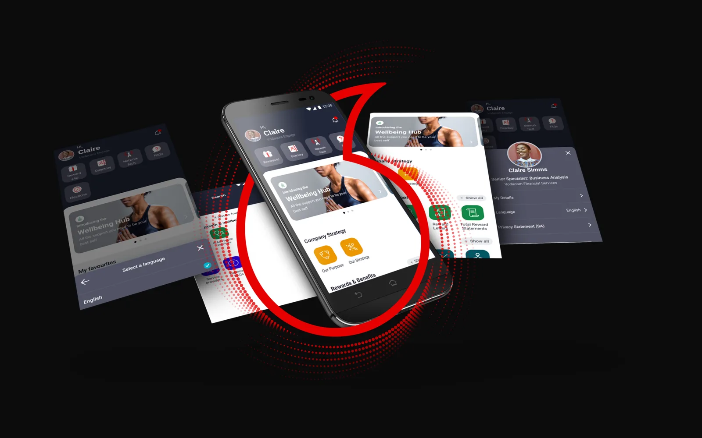
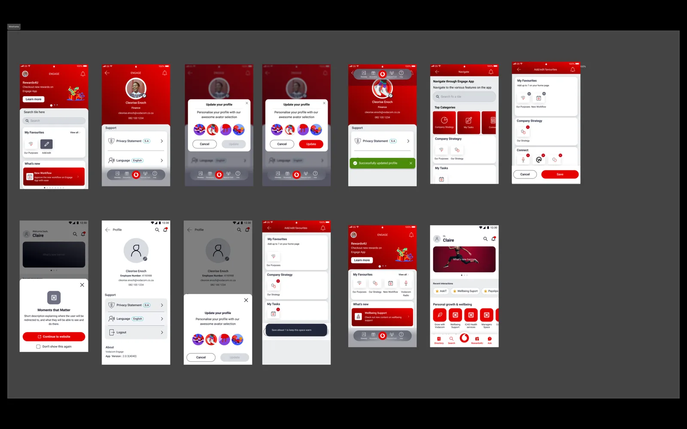
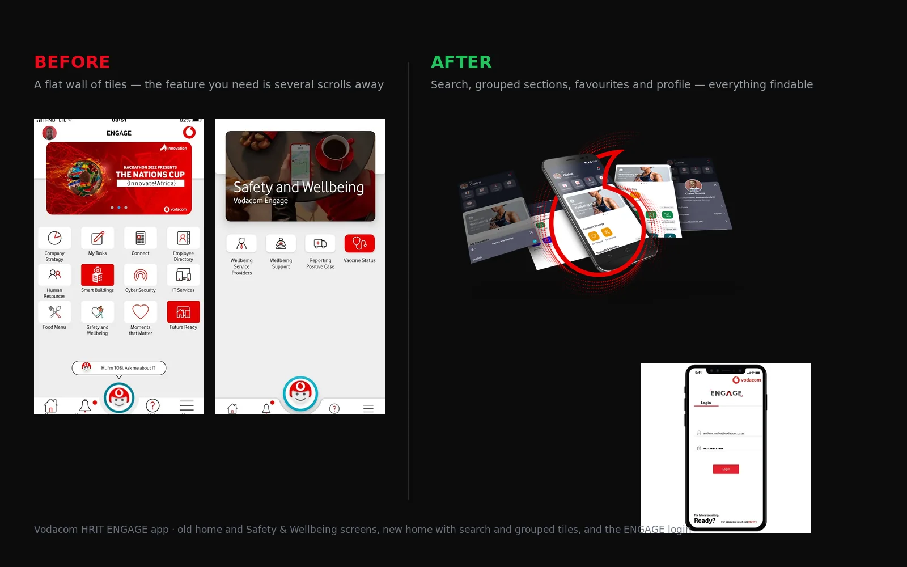

Enterprise mobile app · Product design
Vodacom Engage
Rebuilt a group-wide employee app that had become a wall of tiles nobody could search.
The problem
Vodacom Engage is the front door to communications, policies, wellness, campus services and rewards for the whole group. The home screen opened with a banner and a flat grid of tiles. Everything was there, and most of it could not be found: people opened the app, scrolled, and gave up or called HR.
My role and boundaries
- Owned the research synthesis, information architecture, navigation design, prototyping and usability testing for the redesign.
- Worked with the development team through implementation and reviewed builds against the design before release.
- Contributed to the enterprise design system and the design-authority governance that followed the launch.
- [Insert team size and who made the final call on each decision.]
Three decisions and what I traded away
Grouped sections and search instead of more tiles
Tiles were grouped into sections (Safety and Wellbeing, Policies, Rewards, Apps and others), with one search across features, articles and tools.
Favourites and recents on the home screen
Each employee can pin what they use, placed below the communications banner so work sits above the fold.
Announcements moved below the work
The scrolling banner stayed, but it no longer pushed tools below the fold.
Process
Research and analysis
Wireframes and IA
High-fidelity and testing
Iteration and launch


Outcome
92%UAT acceptance, highest score in the digital portfolio at the time
65%reduction in UI inconsistencies via design-authority governance
Next: Toyota Connected Apps →